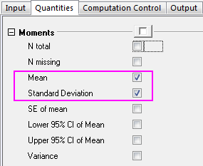
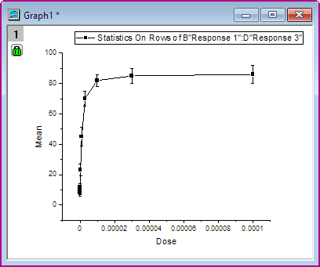
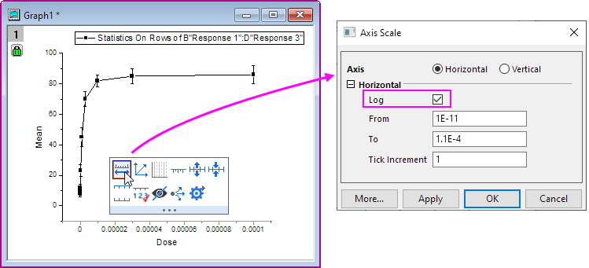
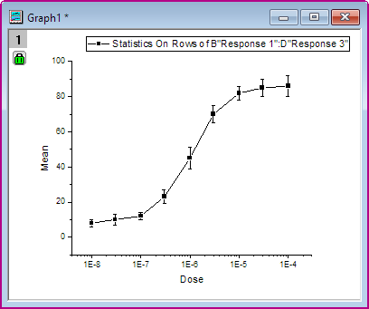
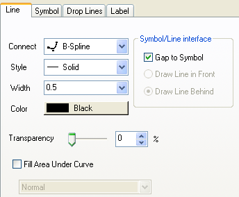
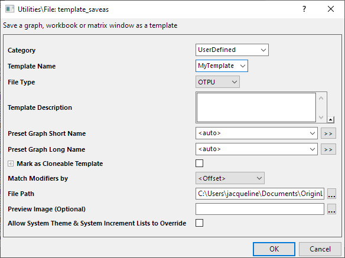
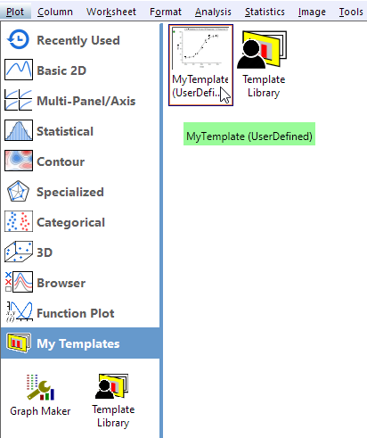
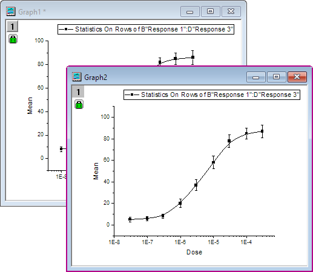

2D-Diagramme
2DPlotting
Zusammenfassung
Origins 2D-Diagramme können umfassend benutzerdefiniert angepasst werden. Sie können alle Eigenschaften der Zeichnung einfach an Ihre eigenen Bedürfnisse anpassen, Layer anordnen und für jeden Layer verschiedene Datensätze wählen. Dieses Tutorial zeigt Ihnen die grundlegenden Werkzeuge zum Zeichnen.
Was Sie lernen werden
Dieses Tutorial zeigt Ihnen, wie Sie:
- einfache Zeilenstatistiken durchführen.
- Ein Diagramm erstellen und als Vorlage speichern
- Daten in Ihre Vorlage zeichnen
- den Dialog Diagrammeinstellungen verwenden.
Schritte
Einfache Zeilenstatistik
- Öffnen Sie ein leeres Arbeitsblatt. Wählen Sie Hilfe: Ordner öffnen: Sample-Ordner ... im Menü, um den Ordner "Samples" zu öffnen. Öffnen Sie in diesem Ordner den Unterordner Curve Fitting. Dort befindet sich die Datei Dose Response - No Inhibitor.dat. Ziehen Sie diese Datei per Drag&Drop in das leere Arbeitsblatt, um sie zu importieren.
- Markieren Sie die Spalten 2 bis 4 und wählen Sie Statistik: Deskriptive Statistik: Zeilenstatistik. Stellen Sie sicher, dass Sie die Kontrollkästchen Mittelwert und Standardabweichung im Zweig Eigenschaften Momente aktiviert haben, um diese Ergebnisse zu erzeugen.

- Nachdem Sie auf die Schaltfläche OK geklickt haben, werden zwei neue Spalten, Mean(Y) und SD(yErr), zum Quellarbeitsblatt hinzugefügt. Hier bedeutet yErr, dass es sich um eine Fehlerspalte handelt und die Daten in dieser Spalte verwendet werden können, um Fehlerbalken zu zeichnen.
Hinweis: Zum Vereinfachen des Zeichnens besitzt jede Spalte in einem Origin-Arbeitsblatt eine Zeichnungszuordnung. Um die Zeichenzuordnung einer Spalte zu ändern, wählen Sie die Spalte aus und klicken Sie auf das Menü Spalte. Alternativ können Sie mit der rechten Maustaste auf die Spalte klicken und im Kontextmenü Setzen als wählen.
Ein Diagramm erstellen und als Vorlage speichern
- Markieren Sie die Spalten Mean(Y) und SD(yEr-) und wählen Sie Zeichnen > Einfache 2D: Punkt-Liniendiagramm, um die Zeichnung zu erstellen:

- Klicken Sie auf die X-Achse und in der Minisymbolleiste auf die Schaltfläche Achsenskalierung. Aktivieren Sie im Dialog Achsenskalierung dann das Kontrollkästchen Log und klicken Sie auf OK.

- Wählen Sie Grafik: Neu skalieren im Menü, um die X- und Y-Achse des Diagramm neu zu skalieren.

- Um die Kurve zu bearbeiten, klicken Sie doppelt auf eines der Zeichnungssymbole, um den Dialog Details Zeichnung aufzurufen. Alternativ können Sie mit der rechten Maustaste in das Diagramm klicken und Eigenschaften Zeichnung im Kontextmenü auswählen. Wählen Sie auf der Registerkarte Linie des rechten Bedienfelds die Option B-Spline als Verbindung, um eine glattere Kurve zu erhalten.

Klicken Sie auf OK, um das Dialogfeld zu schließen.
- Wenn alle Veränderungen vorgenommen worden sind und das Diagramm so aussieht, wie Sie es möchten, können Sie dieses Diagramm verwenden, um eine Vorlage zu erstellen, die in Zukunft für ähnliche Daten verwendet werden kann. Wählen Sie Datei: Template speichern unter, um den Dialog Utilities\File: template save as zu öffnen. Wählen Sie in der Auswahlliste Kategorie die Option UserDefined und vergeben Sie unter Vorlagennameeinen passenden Namen. In diesem Beispiel verwenden wir MeineVorlage. Klicken Sie auf OK, um die Vorlage zu speichern.

Mit Hilfe des Dialogs Diagrammeinstellungen in Diagrammvorlage zeichnen
- Klicken Sie auf die Schaltfläche Neue Arbeitsmappe und importieren Sie die Datei \Samples\Curve Fitting\Dose Response - Inhibitor.dat wie oben beschrieben. Führen Sie die Zeilenstatistik aus, um den Mittelwert und die Standardabweichung dieses Arbeitsblatts mit den gleichen Schritten, wie oben beschrieben, zu berechnen.
- Markieren Sie die Spalte Mean(Y) and SD(yErr) in diesem Blatt. Wählen Sie Zeichnen > Meine Vorlagen: MeineVorlage, um mit der benutzerdefinierte Vorlage eine neue Zeichnung zu erstellen.

Sie erhalten:
